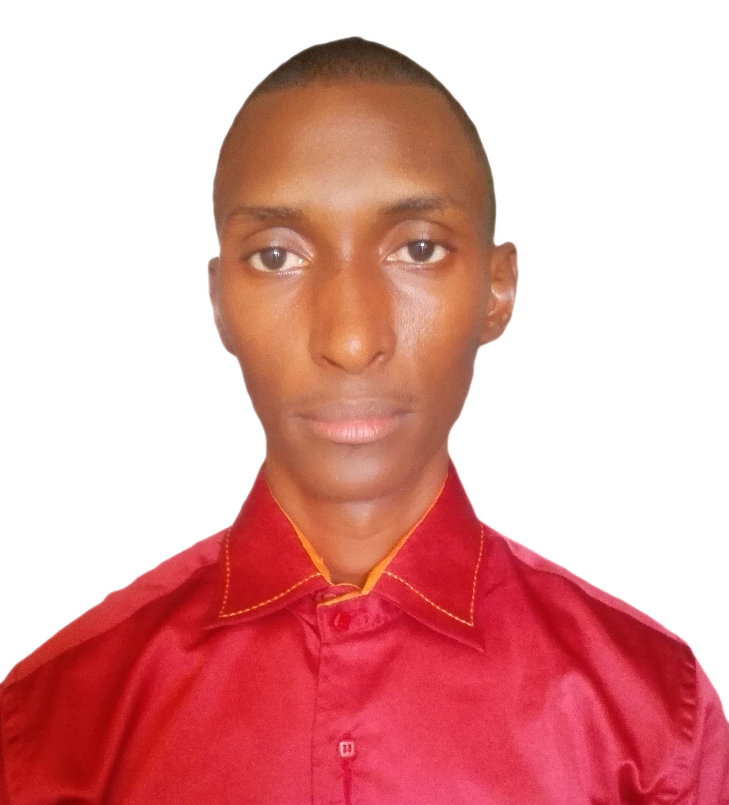

- Bah Elhadj Ibrahima
- Simbaya Gare /Commune de Ratoma
- Nationalité:Guinéenne
- Contact:622243410
- Commune:Ratoma
- Email:piccolobib@gmail.com
Développeur Full Stack
Python & Django.
Formations
2020 - 2021 : Formation en développement Django et python.
2010 - 2014 : Licence Professionnelle en MIAGE.
2008 - 2010 : Baccalaureat Unique Sciences Mathématiques.
2005 - 2008 : Brevet d'Etudes du Premier Cycle.
2004 - 2005 : Certificat d'Etude Primaire.
Expériences Professionnelles
2020 - 2021 : Stage en développement web à Logitech.
2010 - 2014 : Développeur web et maintenancier à Areeba Guinée.
2008 - 2010 : Informaticien Logisiticien à Orange Guinée.
2005 - 2008 : Entrepreneur personnel au de Solution Informatique Guinée.
2004 - 2005 : Stage Professionnel au sein du Cabinet CEMIC.
Compétences
- Windev
- Html
- Python et Django